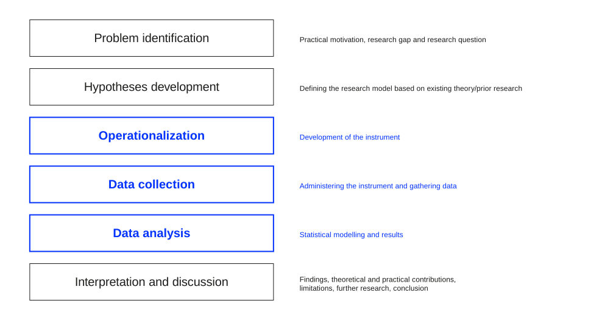
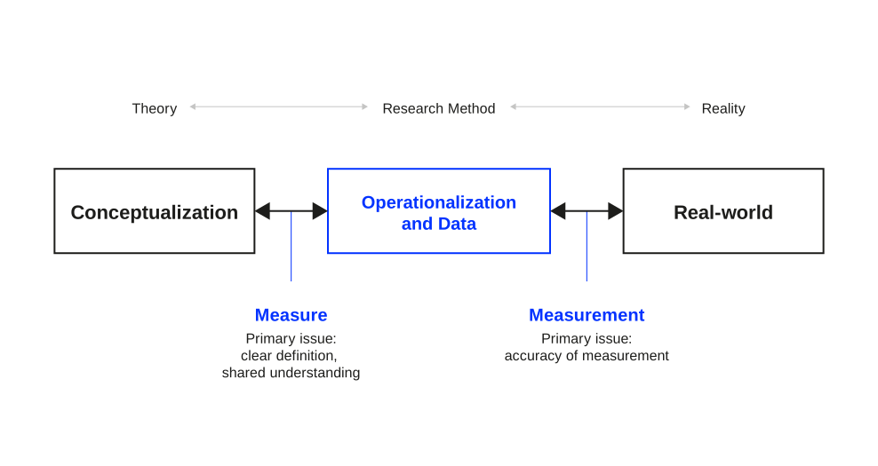
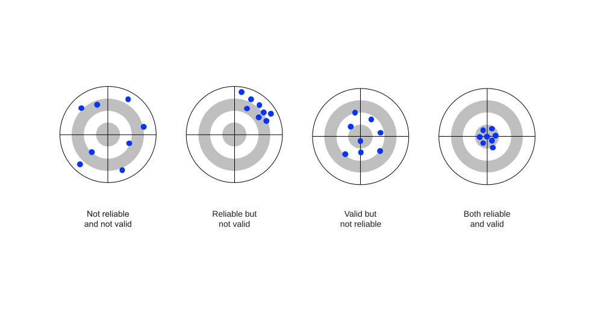
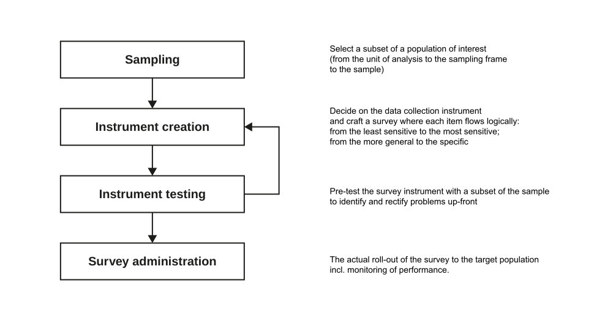

Quantitative methods
Approach phenomena through quantifiable evidence
Opening remarks
Overview
A set of methods and techniques to answer questions, with an emphasis on quantitative data.
- Based on the idea that theories can be proposed that can be falsified by comparing theory to carefully collected empirical data.
- They, thus, focus on quantifiable evidence (i.e., “numbers”)—data is collected about quantities of something, and where numbers represent values and levels of constructs and concepts.
- Analysis often rely on statistical analysis of many cases (or across intentionally designed treatments in an experiment) to create valid and reliable general claims.
- We interpret numbers as evidence of how a particular phenomenon works.
Popular quantitative research methods
- Field experiment
- Lab experiment
- Simulation
- Survey
Process
Overview
The research process has a focus on correct measurement and statistical analysis. Large amounts of responses to analyze relationships are required.

Operationalization
Quantitative research begins by creating a theory to explain real-world phenomena. The theory is then tested using measures that represent variables, and data is collected from real-world phenomena. Figure 3 points to two main challenges in this process.
- Shared meaning: If the connection between theoretical concepts and measures is unclear, measuring the constructs accurately becomes difficult. Ensuring accurate measurements minimizes data problems. However, without shared meaning, even accurate measurements won’t reflect the intended constructs. For instance, if you’re studying emotions related to technology and you confuse “compassion” with a similar concept like “empathy,” issues arise.
- Aaccuracy of measurement: Researchers need accurate data to draw valid conclusions. No matter the analysis, conclusions are unreliable without data reliability.

Phases and outcomes
Conceptualization
Conceptualization refers to the definition of fuzzy and imprecise, vague and ambiguous constructs of social science in concrete and precise terms. It aims at ensuring shared meaning about the constructs at the theoretical level. It often requires to separate related constructs conceptually (i.e., providing clear definitions)
Construct conceptualization involves identifying and defining what the construct is intended to represent or capture conceptually, discussing how the construct differs from other related constructs, and defining any dimensions or content domains that are relevant to grasping and defining the conceptual theme of the construct it its entirety. Each construct should have (1) a label, (2) a definition, (3) ideally one or more examples that demonstrate its meaning (as a demonstration of face validity), and (4) a discussion of related constructs in the literature. Papers and theses often use construct definition tables for this purpose, where each of the four points becomes a column and each construct in the study has its own row (Recker, 2021, p. 100).
Nature of constructs
Constructs can be unidimensional or multidimensional (Wright et al., 2012).
- Unidimensional constructs are expected to have a single underlying dimension. They can be measured using a single measure or test. For instance, a person’s weight and age are simple unidimensional constructs.
- Multidimensional constructs consist of two or more underlying dimensions. Each dimension must be measured separately (either reflective or formative). For instance, a persons’ academic ability can be conceptualized as consisting of two dimensions: mathematical and verbal ability.
From the theoretical to the empirical dimension
Operationalization refers to the development of indicators or items for measuring theoretically defined constructs at the empirical level. For instance, the unobservable theoretical construct “socioeconomic status” could be defined as the ‘level of family income’ and thus operationalized using an indicator (interchangeably used terms: indicator question, item) that asks respondents for the annual family income
The combination of indicators at the empirical level representing a given construct is called a variable. Variables may be independent, dependent, mediating or moderating (i.e., the cause, the outcome, the underlying mechanism or condition)
Scales
Each indicator may have several attributes (or levels) and each attribute represent a value (e.g., a gender variable may have two attributes).
Common rating scales are
- Nominal scales for categorial data (e.g., gender)
- Likert-type scales for latent constructs, measuring ordinal data by simply-worded statements to which respondents can indicate their extent of agreement (e.g., using Excel would improve my job performance.)
Reliability and validity

Internal validity (causality) examines whether the observed change in a dependent variable is indeed caused by a corresponding change in independent variable, and not by variables outside the research context. Different research designs vary considerably in their respective level of internal validity (e.g., experiments vs. field surveys).
External validity (generalizability) refers to whether the observed associations can be generalized from the sample to the population, or to other people, organizations, contexts, or time (ecological validity).
Reliability refers to the consistency, stability, and reproducibility of measurement or data collection methods. It reflects the extent to which a measurement or research instrument produces consistent results when applied repeatedly under the same conditions.
Validity of measurements represent the essence or content upon which the construct is focused, i.e., valid measurements measure what they intend to measure.
- Theoretical assessments assess how well an operationalization fits the conceptual definition of the relevant theoretical construct.
- Face validity: The indicator seems to be a reasonable measure of its underlying construct (“on its face”). Example: Is annual salary a good measure of job satisfaction? No.
- Content validity: A set of measurement items matches the content domain of the construct.
- Empirical (statistical) assessments of validity, which assess how well a measurement behaves in correspondence to the theoretical predictions. Tests include convergent validity and discriminant validity; see Straub et al. (2004).
Reliability describes the extent to which a variable or set of indicators is consistent in what it is intended to measure. If multiple measurements are taken, the reliable measurements will all be very consistent in their values.
- The operations of a study can be repeated in equal settings with the same results
- Reliability tries to decrease dependency on researcher’s subjectivity
- There is a wide range of statistical reliability tests such as internal consistency (Cronbach’s alpha) and composite reliability; see @Straub et al. (2004)
Examples
| Construct | Definition | Indicators |
|---|---|---|
| Behavioral Intention | Participant’s intentions to use a particular system in the future |
- I intend to use the system in the next - I predict I would use the system in the next - I plan to use the system in the next |
| Attitude towards Behavior | An individual’s positive or negative feelings about performing the target behavior. |
- Using the system is a bad/good idea - Using the system is a foolish/wise idea - I dislike/like the idea of using the system - Using the system is unpleasant/ pleasant |
| Perceived Usefulness | The degree to which a person believes that using a particular system would enhance his or her job performance. |
- Using the system in my job would enable me to accomplish tasks more quickly - Using the system would improve my job performance - Using the system in my job would increase my productivity - Using the system would enhance my effectiveness on the job - Using the system would make it easier to do my job - I would find the system useful in my job |
| Perceived Ease of Use | The degree to which a person believes that using a system would be free of effort. |
- Learning to operate the system would be easy for me - I would find it easy to get the system to do what I want it to do - My interaction with the system would be clear and understandable - I would find the system to be flexible to interact with - It would be easy for me to become skillful at using the system - I would find the system easy to use |
Measurement development
After having developed a conceptual definition of the construct, the first step is to identify and to develop potential items for the construct (Recker, 2021).
Because developing and assessing measures and measurement is time-consuming and challenging, the first rule should always be to identify and re-use (wherepossible) measures and measurements that have already been developed and assessed.
Existing items—best case, you rely on established measures. Look for measurements reported in papers or use a measurement database such as TheoryOn or the Handbook of Management Scales.
New items—follow one of the guidelines published. You might start with Recker (2021)’s procedural model to create new measurement instruments for conceptually defined theory constructs.
If you need to adapt existing items, you should take multiple steps to evaluate and optimize content validity of the items selected/created:
- Expert panel: people with experience about the domain judge whether items appropriately describe the construct
- Card-sorting: experts are asked to sort/rank the items to the constructs of interest. If items are consistently assigned to the intended construct, then there is confidence for ‘content validity’
- Revision: items that are not consistently assigned to the intended construct, need to be rephrased or eliminated. Re-evaluate the items until sufficient ‘content validity’ is achieved
After data collection (or best case a pre-study) you need to validate the instrument by statistically check reliability and validity.
- Exploratory factor analysis (EFA): a method to uncover the underlying structure (constructs) within variables/items – to ‘explore’ the relationships between items. Usually done with the software ‘SPSS’.
- Confirmatory factor analysis (CFA): a method to ‘confirm’ that the items measure the target construct and nothing else. Can be done with software like ‘SmartPLS’.
Data collection
Process

Sampling
- Defining the unit of analysis such as person, group, organization with the characteristics that you wish to study
- Choosing a sampling frame. Based on e.g., accessible section of the target population, determines the scope of generalizability
- Choosing a sample from the sampling frame by means of a sampling technique.
- Probability sampling secures that every unit in the population has a chance of being selected in the sample, and this chance can be accurately determined (emphasis on generalizability)
- Nonprobability sampling is a sampling technique in which some units of the population have zero chance of selection or where the probability of selection cannot be accurately determined (e.g., convenience sampling)
Instrument creation
- Decide on the data collection instrument
- Ensure that questions flow logically from one to the next
- From the least sensitive to the most sensitive; from the more general to the specific
- Start with easy non-threatening questions
- Ask about one topic at a time; when switching topics, use a transition
- Be respectful of the time of respondents and keep your survey as short as possible
- Always assure respondents about the confidentiality of their responses and how you will use their data and how the results will be reported
Instrument testing
- Evaluate the instruments (pre-tests) with a subset of the sample to identify and rectify problems up-front
- Observation of the pre-test participants during questionnaire completion and follow-up interviews to uncover ambiguity, lack of clarity, or biases in question wording, evaluate the survey interface and layout, establish how much time it takes on average to fill the survey, identify ways to increase response rates, etc.
Biases
In research, bias refers to systematic errors or distortions in the collection, analysis, interpretation, or reporting of data that can lead to inaccurate or misleading conclusions. Bias can arise from various sources and impact different stages of the research process, potentially compromising the validity, reliability, and generalizability of study findings.
There are several types of bias that are relevant to quantitative research and you should be aware of, e.g.:
- Sampling bias (unrepresentative sample)
- Non-response bias (low response rates may indicate that non-respondents are not responding due to a systematic reason)
- Social desirability bias (many respondents tend to avoid negative opinions or uneasy comments about themselves, their employers, etc.)
- Common method bias (using the same instruments for independent and dependent variables)
Reporting requirements
Report your sampling method and the resulting sample:
- The approach used to randomize or select samples (indicates validity and representativeness of the sample frame and ultimately the survey results)
- A profile of the sample frame and characteristics of respondents (indicates how the sample is adequately corresponding to the target population)
- The response rate (the number of people who answered the survey divided by the number of people in the sample – indicates non-response bias)
Report the survey instrument (exact wording of questions)
Report evidence on validity and reliability of the survey instrument
Data analysis
Overview
Data analysis can take the form of simple descriptive statistics or of more sophisticated statistical inferences such as
- Univariate analysis: methods that analyze one variable (e.g., analysis of single-variable distributions)
- Bivariate analysis: methods that analyze two variables (e.g., analysis of correlation)
- Multivariate analysis: methods that simultaneously analyze multiple measurements on each individual or object under investigation (e.g., structural equation techniques such as LISREL or PLS)
PLS-SEM
Partial Least Squares Structural Equation Modeling (PLS-SEM) is a statistical technique used for analyzing relationships between variables in empirical research. It combines elements of both structural equation modeling (SEM) and regression analysis.
PLS-SEM is particularly well-suited for situations where the relationships among variables are complex, the sample size is relatively small, or the data does not meet the assumptions of traditional linear regression. It is often used in disciplines such as management, marketing, information systems, and social sciences to test and validate theoretical models.
Key features (see e.g., Hair et al., 2019):
- Latent variables: Like traditional SEM, PLS-SEM can handle latent variables, which are constructs that cannot be directly observed but are inferred from multiple observed indicators (variables).
- Path modeling: PLS-SEM allows researchers to assess both the measurement model (relationships between latent variables and their indicators) and the structural model (relationships among latent variables). It’s used to test hypotheses about these relationships.
- Small sample sizes: PLS-SEM is particularly useful when dealing with small sample sizes, as it is more robust to violations of normality and distribution assumptions.
- Prediction-oriented: PLS-SEM can be used for predictive purposes, making it suitable for applications where the primary goal is to predict an outcome or estimate relationships, rather than explain complex underlying processes.
- Reflective and formative constructs: PLS-SEM can handle both reflective (indicators represent different facets of the same construct) and formative (indicators collectively define the construct) measurement models.
- Non-normal data: PLS-SEM is less sensitive to assumptions of multivariate normality, making it suitable for data that do not follow a normal distribution.
SmartPLS
SmartPLS (Ringle et al., 2022) is a popular software tool used for conducting PLS-SEM analyses.
- It provides researchers with a user-friendly interface to specify, estimate, and evaluate complex models involving latent variables and observed indicators.
- It is widely used in research fields such as business, management, marketing, information systems, and social sciences.
- It offers an approachable platform for researchers who are new to PLS-SEM, as well as advanced functionalities for more experienced users.